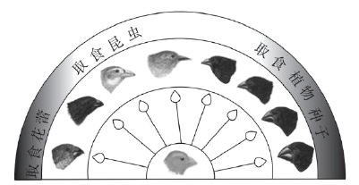

2022年北京市中考生物真题 · 选择题 第21、22、23、24、25题
21. 中华白海豚是列入《中国水生野生动物保护蓝皮书》中的濒危物种，在分类上判断其为哺乳动物，主要依据是
A. 体内受精B. 用肺呼吸C. 胎生、哺乳D. 体温恒定
22. 加拉帕戈斯群岛的不同小岛上生活的地雀种类存在差异。地雀喙型的进化过程如图。下列相关叙述错误的是

A. 多种地雀具有共同的祖先B. 地雀祖先存在喙型不同的变异
C. 喙型的进化与食物种类无关D. 喙型的进化是自然选择的结果
23. 水痘是由水痘--带状疱疹病毒引起的，可通过注射水痘疫苗进行预防。下列相关叙述错误的是
A. 该病毒是引发水痘的病原体B. 水痘疫苗起到抗原的作用
C. 水痘疫苗刺激机体产生抗体D. 该过程属于非特异性免疫
24. 下列食品制作过程中没有应用发酵技术的是
A. 酸奶B. 米酒C. 腐乳D. 绿豆汤
25. 北京冬奥会践行“绿色奥运”理念，实现了碳中和，即二氧化碳等温室气体的排放和消耗之间达到平衡。下列做法能够消耗大气中二氧化碳的是
A. 植树造林B. 建筑材料回收利用
C. 风能发电D. 倡导绿色出行方式